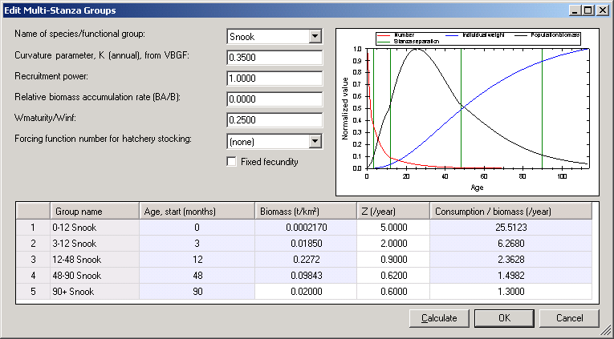

than the cohort born “a” years ago (see Multi-stanza groups). See Other production for notes about estimating the relative biomass accumulation rate.
than the cohort born “a” years ago (see Multi-stanza groups). See Other production for notes about estimating the relative biomass accumulation rate.
Once you have defined a multi-stanza group(s) you must go to the Edit multi-stanza groups form to set the parameters needed to calculate the biomass and numbers in each age category. To open the Edit multi-stanza groups form, choose the Edit multi-stanza groups... option on the Ecopath menu. Features of the Edit multi-stanza groups form are shown in Figure 6.1.
You must enter baseline estimates of total mortality rate Z (i.e., P/B) and diet composition for each stanza, and biomass and consumption (Q/B) for one “leading” stanza only (the oldest stanza). Biomass and consumption are then computed for the other stanzas, assuming a stable age distribution.

Figure 6.1. The Edit multi-stanza groups form
Use the pull-down menu to select the multi-stanza goup to edit.
Set the von Bertalanffy growth rate (von Bertalanffy 1938). Note that it is assumed that body growth for the species as a whole follows a von Bertalanffy growth curve with weight proportional to length-cubed.
This parameter is used by Ecosim and sets the degree of density dependence in juvenile survival for juveniles outside the modelled area. Set a low value, (e.g., 0.1-0.5) for this parameter if the juveniles for a group spend some time ‘outside’ the system in a nursery area where they are subject to density-dependent juvenile mortality rate, (e.g., juvenile Pacific salmon abundance may be limited by freshwater nursery habitat, so that numbers recruiting to a coastal oceanic area can be practically independent of adult abundance in the oceanic area, especially if juvenile production is ‘enhanced’ by hatchery systems).
Note that you should not need to change other basic parameters defining trophic ontogeny for split groups. When it is the very early juvenile stage that is spent in some rearing habitat outside your modelled area (e.g. a stream or coastal lagoon), you may model the effect of limiting factors within that rearing habitat just by adjusting the recruitment power parameter, without bothering to account factors such as ‘Import’ of food to the juvenile biomass while juveniles are in the rearing area (cumulative effect of such trophic development are automatically calculated when scaling the juvenile body sizes within Ecosim based on Ecopath juvenile pool biomass). You can also use a low recruitment power parameter to make juvenile recruitment ‘flat’ with respect to modelled adult biomass due to recruitment of juveniles from some adult population ‘egg source’ outside the modelled area.
The BA/B term represents effect on the numbers at age of the population growth rate (e.g. the cohort born one year ago should be smaller by the factor than the cohort born “a” years ago (see Multi-stanza groups). See Other production for notes about estimating the relative biomass accumulation rate.
Set the mean weight at maturity/w∞. Note that it is assumed that body growth for the species as a whole follows a von Bertalanffy growth curve with weight proportional to length-cubed.
Multi-stanza populations can be designated as hatchery populations (see Hatchery populations in Ecosim), and hatchery production can be varied over time in Ecosim using time forcing functions. To turn off natural reproduction select the hatchery forcing function from the pull-down menu in the Forcing function number for hatchery stocking box.
Note, you must already have a forcing time series loaded in Ecosim (see Time series and Forcing function). Note that forcing functions to represent historical changes in stocking rates can be entered via the same csv files as used to set up historical fishing and model fitting scenarios. Enter stocking rates as values relative to the stocking rate of 1.0 assumed for the Ecopath base year.
At each simulation time step, the base recruitment for the population (calculated from Ecopath input parameters) will be multiplied by the current time value for the designated forcing function.
Note also that if it is desired to simulate stocking of older fish (e.g., 18 months), the first stanza for the population should be set to have this duration, the mortality rate (Z or P/B) for the stanza should be set to .001, and the diet for the stanza should be set to 1.0 imported (i.e., do not have fish in the stanza feeding in the modelled ecosystem).
Some types of organism (e.g., marine mammals or some sharks) may have a fixed number of young each year, regardless of adult body weight. Checking the Fixed fecundity check box sets the number of young.
The start age of each stanza is set on the Edit groups form. Note that the youngest stanza must have a start age of zero months.
You must enter estimated absolute biomass (in appropriate units) for one “leading” stanza (i.e., the oldest stanza).
You must enter estimated total mortality rates for each stanza. A single-species age-structured model can be used to help estimate these parameters.
You must enter estimated consumption/biomass (Q/B) for one “leading” stanza (i.e., the oldest stanza).
A plot showing numbers at age, biomass age and weight at age is shown at the left of the form. This plot can be used to guide you in setting parameters for the group. To update the plot after changing parameters, click the Calculate button. To close the form and implement changes, click the OK button. To exit without implementing any changes, click the Cancel button.